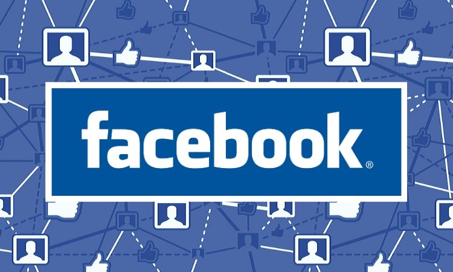
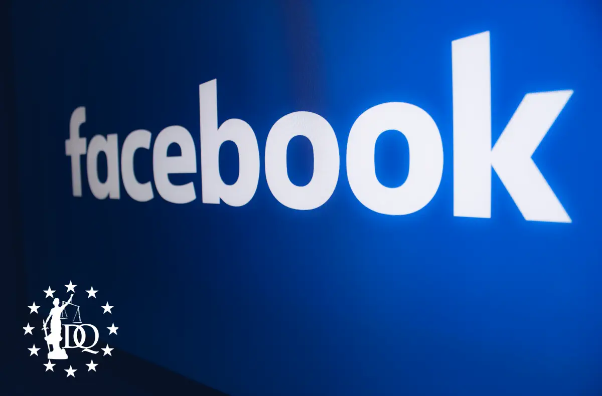
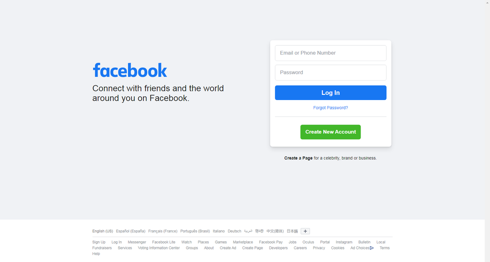

| Historia |
- Nació como una red social universitaria y ahora, es una entidad que busca construir el metaverso.
Facebook fue lanzado el 4 de febrero de 2004 por Mark Zuckerberg, Eduardo Saverin, Dustin Moskovitz,
Andrew McCollum y Chris Hughes, durante sus años en la Universidad de Harvard.
- Según informes del pasado año, la red social es la más popular y acumula más de 3.000 millones de usuarios
(por comparativa, la población mundial total es aproximadamente de 8.000 millones).
|

|
| Septiembre de 2004, ¡Aquí faltaba un muro! |
- En los meses posteriores a su creación, TheFacebook creció rápidamente.
En marzo, la plataforma se había expandido a tres campus universitarios adicionales:
Yale, Columbia y Stanford.
El éxito hizo que los fundadores continuaran trabajando en la plataforma,
y en septiembre de ese mismo año, lanzaron el "muro", que permite a los usuarios publicar mensajes y fotografías en su propia página,
así como recibir mensajes de otros.
Este acabó por convertirse en uno de los grandes atractivos de la plataforma y unos meses después,
en diciembre de 2004, TheFacebook alcanzó el millón de usuarios.
|

|
| Febrero de 2004, nace TheFacebook en algún lugar de Harvard |
- El 4 de febrero de 2004, Mark Zuckerberg lanzó junto con sus compañeros de universidad TheFacebook,
una plataforma social en la que los estudiantes de Harvard pudieran conectar con el resto,
a través de sus correos electrónicos y fotografías. El sitio fue un éxito inmediato y en 24 horas,
TheFacebook tenía ya 1.200 usuarios registrados. Un mes después,
la mitad de estudiantes de Harvard había creado sus perfiles.
|

|
Continuara...